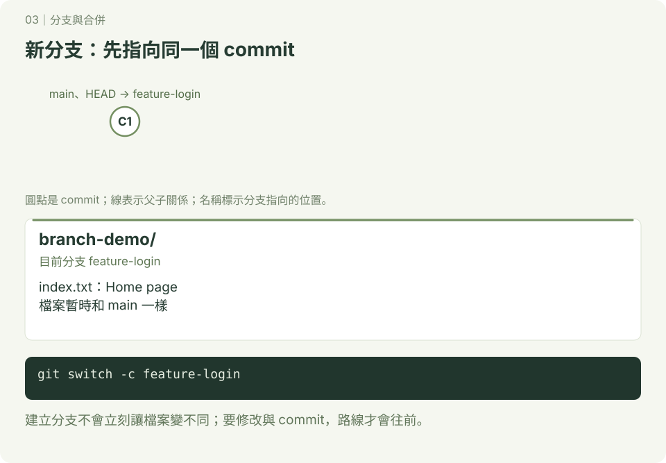

分支與合併
這一章練習在獨立分支新增功能，再把成果合併回 main。請先完成工作區與暫存區及 main、HEAD 與歷史。
1. 分支有什麼用？
分支是指向 commit 的名稱。建立新分支時，兩個名稱先指向同一筆提交；在新分支提交後，新分支往前移動，main 仍指向原本的提交。完成後，在 main 執行 merge，才會把功能整合進 main。
工作區有未提交修改時，切換分支可能被 Git 阻止，或讓修改保留在切換後的工作區；切換前先用 git status 檢查。本章的切換都從乾淨狀態開始。

2. 跟著做：建立功能分支
這個練習獨立建立。在 macOS／Linux 終端機或 Windows Git Bash 選一個練習位置，確認 branch-demo 尚不存在：
mkdir branch-demo
cd branch-demo
git init -b main
printf 'Home page\n' > index.txt
git add index.txt
git commit -m "新增首頁"
git switch -c feature-login
git branchswitch -c 建立並切換到新分支。git branch 列出本地分支，星號標示目前的 feature-login。接著新增並提交會員功能：
printf 'Login form\n' > login.txt
git add login.txt
git commit -m "新增登入表單"
git status --short最後沒有輸出表示工作區乾淨。此時功能提交在 feature-login，尚未合併到 main。
3. 切回 main，觀察檔案
git switch main
git branch --show-current
ls
git log --oneline --all --graph目前分支是 main，ls 看不到已追蹤的 login.txt；它仍保存在功能分支的 commit 中。--all 讓 log 也顯示其他分支的歷史。
4. 合併並清理
確認目前在接收成果的 main，再指定來源分支：
git merge --ff-only feature-login
cat login.txt
git log --oneline --graph
git branch -d feature-login
git branch現在 main 有 login.txt。這個練習中 main 沒有新增其他提交，Git 可以直接將 main 往前移，稱為 fast-forward；--ff-only 在不能快轉時會拒絕合併。branch -d 刪除已合併的分支名稱，不會刪掉 main 已接收的提交。
若兩個分支各自增加提交，可能需要一般 merge；若修改同一段內容，還可能發生衝突。完成基礎練習後，參考合併與衝突延伸範例，或查閱常見錯誤訊息。
5. 換你做
在 branch-demo 從 main 建立 feature-about，新增並提交 about.txt。切回 main，確認合併前看不到該檔案；合併後確認檔案出現，再刪除已合併的分支。
想一想：要讓 main 收到 feature-about 的內容，應該先切到哪個分支？答案是 main：merge 把指定來源整合進目前分支。